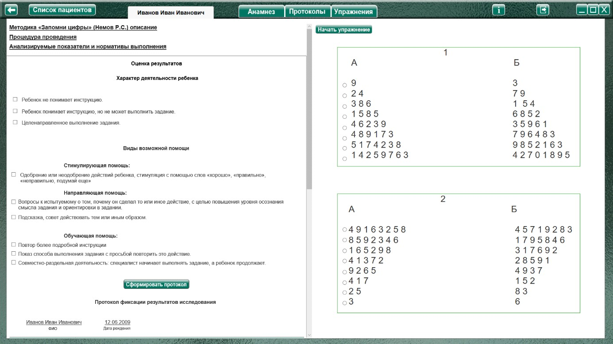
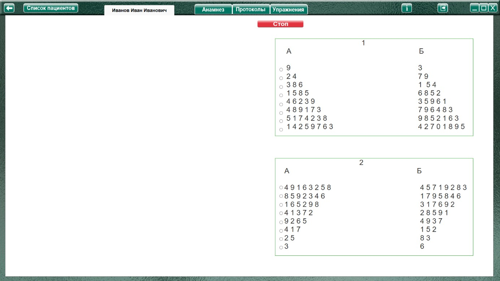
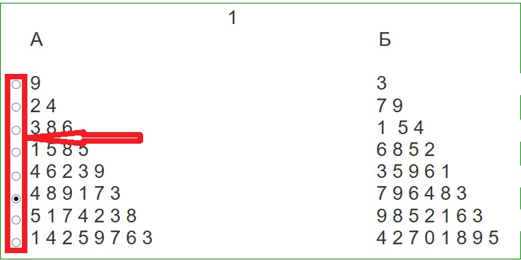

Методика "Запомни цифры" (Немов Р.С.)
Методика "Запомни цифры" (Немов Р.С.) описание
Процедура проведения.
Ребенок получает инструкцию следующего содержания:
«Сейчас я буду называть тебе цифры, а ты повторяй их за мной сразу после того, как я скажу слово "повтори"».
Далее специалист последовательно зачитывает ребенку сверху вниз ряд цифр, представленных в задании 1 А, с интервалом в 1 сек между цифрами. После прослушивания каждого ряда ребенок должен его повторить вслед за специалистом. Это продолжается до тех пор, пока ребенок не допустит ошибки.
1
А Б
9 3
2 4 7 9
3 8 6 1 5 4
1 5 8 5 6 8 5 2
4 6 2 3 9 3 5 9 6 1
4 8 9 1 7 3 7 9 6 4 8 3
5 1 7 4 2 3 8 9 8 5 2 1 6 3
1 4 2 5 9 7 6 3 4 2 7 0 1 8 9 5
Если ошибка допущена, то специалист повторяет соседний ряд цифр, находящийся справа (колонка Б) и состоящий из такого же количества цифр, как и тот, в котором была допущена ошибка, и просит ребенка его воспроизвести. Если ребенок дважды ошибается в воспроизведении ряда цифр одной и той же длины, то на этом данная часть психодиагностического эксперимента завершается, отмечается длина предыдущего ряда, хотя бы раз полностью и безошибочно воспроизведенного, и переходят к 2 заданию (зачитыванию рядов цифр, следующих в противоположном порядке — убывающем (А, Б).
2
А Б
4 9 1 6 3 2 5 8 4 5 7 1 9 2 8 3
8 5 9 2 3 4 6 1 7 9 5 8 4 6
1 6 5 2 9 8 3 1 7 6 9 2
4 1 3 7 2 2 8 5 9 1
9 2 6 5 4 9 3 7
4 1 7 1 5 2
2 5 8 3
3 6
Анализируемые показатели и нормативы выполнения
Объем кратковременной слуховой памяти ребенка численно равен полусумме максимального количества цифр в ряду, правильно воспроизведенных ребенком в первой и во второй попытках.
Оценка результатов
10 баллов — ребенок правильно воспроизвел в среднем 9 цифр.
8-9 баллов — ребенок точно воспроизвел в среднем 7-8 цифр.
6-7 баллов — ребенок безошибочно смог воспроизвести в среднем 5—6 цифр.
4-5 баллов — ребенок в среднем воспроизвел 4 цифры.
2-3 балла — ребенок в среднем воспроизвел 3 цифры.
0-1 балл — ребенок в среднем воспроизвел от 0 до 2 цифр.
Выводы об уровне развития
10 баллов - очень высокий.
8-9 баллов - высокий.
4-7 баллов - средний.
2-3 балла - низкий.
0-1 балл - очень низкий.
Оценка результатов
Характер деятельности ребенка:
Виды возможной помощи:
Стимулирующая помощь
Направляющая помощь:
Обучающая помощь:
Протокол фиксации результатов исследования
_________________________________ _______________
ФИО Дата рождения
Методика |
Запомни цифры |
Автор методики (адаптации, модификации) |
Немов Р.С. |
Цель: |
определения объема кратковременной слуховой памяти ребенка. |
Дата / специалист |
|
Результат: баллы (макс.) / вывод об уровне развития |
|
Примечание |
|
Процесс выполнения диагностической методики |
|
Характер деятельности ребенка |
Виды помощи |
Кол-во цифр: нарастание / убывание |
Баллы
|
Ячейки «Характер деятельности ребенка», «Виды помощи» заполняются в зависимости от выбора специалиста в поле «Оценка результатов» либо самостоятельно.
Кол-во цифр: нарастание / убывание – отмечается специалистом в процессе проведения упражнения при помощи радиокнопок слева.
Остальные ячейки заполняются (правятся) специалистом самостоятельно.
Логика выполнения упражнения

После ознакомления ребенка с заданием (согласно пункту «Процедура проведения») нажать кнопку «Начать упражнение» (для открытия упражнения на весь экран).

Выполнить задание согласно пункту «Процедура проведения». Длинна строки отмечается в процессе выполнения задания при помощи радиокнопок слева от колонок с цифрами (выделено красным на рисунке ниже). Количество цифр из данной строки заносится в протокол, в колонку Кол-во цифр: нарастание (задание 1) / убывание (задание 2).

После выполнения задания нажать кнопку «Стоп», останавливая секундомер и открывая поле оценки результата. При необходимости выбрать характер деятельности, виды помощи, и нажать кнопку «Сформировать протокол». Произвести оценку результата (заполнить оставшиеся ячейки протокола) согласно пункту «Анализируемые показатели и нормативы выполнения».